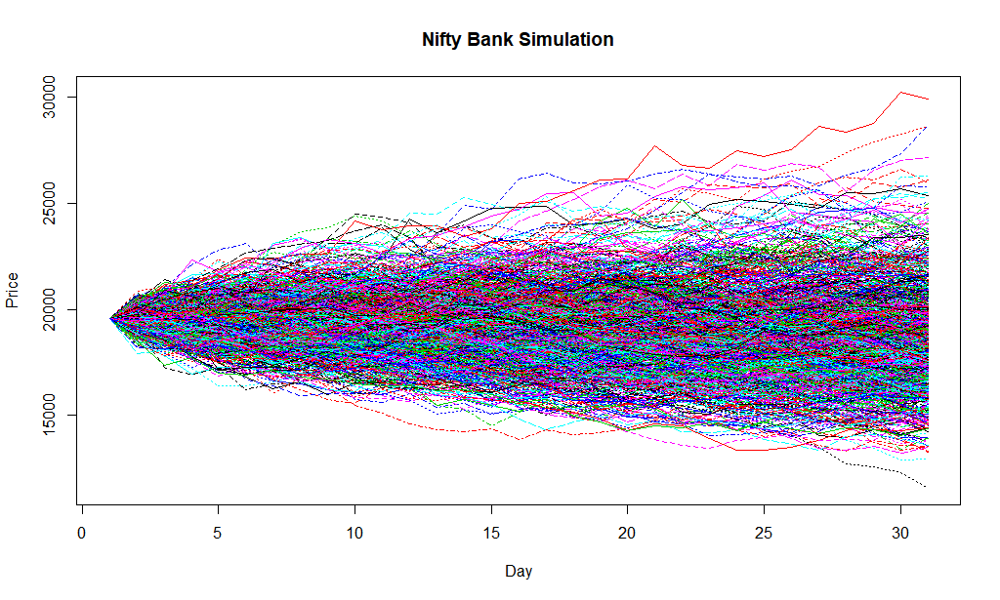

A A R Y A N D E O R I
We took the Bank Nifty daily historical data from NSE website. We used closing price as in the opening price the volatility is relatively high normally. Then we calculated the daily log normal returns. We found the mean, standard deviation and variance of these returns. Then we calculated the drift and added a random value. We simulated various(in this case 1000) paths using monte carlo simulation method for upcoming 30 periods(in this case days). For each path we calculated the maximum value at 95% confidence interval and then took the average. We also calculated the maximum value at 95% confidence interval for the historical data used. Then we calculated a weighted average of both the VaRs giving 60% weughtage to historical data and 40% simulated data. Thus we obtained the final VaR as 27532.92.
